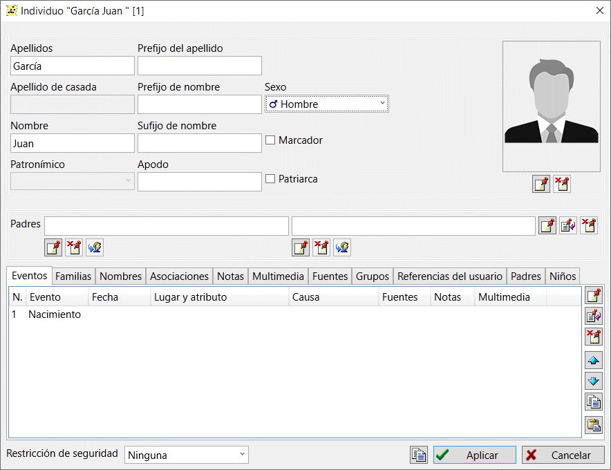

Registro de personas
Un registro de persona es el tipo de registro más importante de una base de datos genealógica.
Un registro de este tipo contiene toda la información sobre una persona.
GEDKeeper permite almacenar el nombre completo, el apodo y el sexo en un registro de persona.
Puedes enumerar todos los acontecimientos y hechos relacionados con la vida de la persona.
Con GEDKeeper puedes investigar fácilmente las relaciones familiares y sociales de la persona
(asociaciones con otras personas). GEDKeeper nunca te restringe el número de familiares e hijos de una persona.
Además, puede dividir a las personas por diferentes grupos sociales, añadir indicadores adicionales
para mejorar la obviedad (referencias y notas a pie de página), añadir un número ilimitado de notas,
materiales multimedia y fuentes, y añadir el retrato de una persona para mostrarlo en los árboles.
Esta es la lista de pestañas de diálogo y las respectivas categorías de datos que puede modificar:
- Evento representa un acontecimiento o hecho de la vida de una persona.
-
Familia enumera los matrimonios de personas o relaciones familiares;
los hijos comunes se especifican en el diálogo dedicado.
- Asociación enumera las relaciones sociales de una persona.
-
Grupo es una forma de unir a las personas mediante relaciones sociales,
lo que hace que la navegación y la búsqueda sean más eficaces.
- Nota es un texto arbitrario sobre la persona.
- Contenido multimedia adjunta fotos, documentos escaneados y retratos.
-
Fuentes representa documentos usados, correspondencia y
otros tipos de fuentes de información sobre una persona.
-
Referencias/notas al pie de página es un indicador adicional
para el propio GEDKeeper o una forma de crear a mano una clasificación.

-
Para cambiar los padres de una persona se utiliza un panel especial con dos campos:
el padre y la madre de la persona, y tres grupos de botones. A primera vista puede parecer demasiado complejo,
pero en la práctica permite una edición flexible de las propiedades de los objetos.
El grupo de botones
 ,
,
 ,
and
,
and  la derecha
de los nombres de los padres modifica la familia de los padres como un objeto completo.
Es decir, puede utilizar el botón de añadir nuevo registro para adjuntar la persona afectada a una familia existente.
Utiliza el botón de edición del registro actual
para modificar las propiedades de una familia ya adjunta sin necesidad de cerrar la ventana de edición de personas abierta en ese momento.
Utiliza el botón borrar registro actual
situado a la derecha de los nombres de los padres para desvincular a una persona de la familia.
la derecha
de los nombres de los padres modifica la familia de los padres como un objeto completo.
Es decir, puede utilizar el botón de añadir nuevo registro para adjuntar la persona afectada a una familia existente.
Utiliza el botón de edición del registro actual
para modificar las propiedades de una familia ya adjunta sin necesidad de cerrar la ventana de edición de personas abierta en ese momento.
Utiliza el botón borrar registro actual
situado a la derecha de los nombres de los padres para desvincular a una persona de la familia.
-
Los mismos botones: ,
, y el botón
 situados bajo el nombre de cada progenitor realizan otras funciones.
El botón añade
una nueva familia si aún no se ha añadido ninguna y, a continuación, añade el progenitor concreto a esta
familia (padre o madre, en función de la sección seleccionada).
El botón elimina un progenitor (padre o madre) de la familia de una persona.
Para saltar rápidamente al registro de persona de un progenitor, utilice el botón
button.
situados bajo el nombre de cada progenitor realizan otras funciones.
El botón añade
una nueva familia si aún no se ha añadido ninguna y, a continuación, añade el progenitor concreto a esta
familia (padre o madre, en función de la sección seleccionada).
El botón elimina un progenitor (padre o madre) de la familia de una persona.
Para saltar rápidamente al registro de persona de un progenitor, utilice el botón
button.
-
A la derecha del nombre completo y el sexo de la persona hay un cuadro de edición específico en el que puede introducir información adicional sobre el nombre de la persona:
apodo, seudónimo, estado, prefijo y sufijo del nombre.
-
Para modificar un objeto de cualquier tipo relacionado con la persona afectada, se utiliza una pestaña específica y los siguientes botones estándar:
,
, and .
Puede añadir a la persona afectada cualquier número de acontecimientos relacionados con su vida, diversos atributos,
notas, fotos u otros contenidos multimedia, así como materiales fuente que mencionen a la persona, matrimonios y grupos.
Utilice la lista especial de asociaciones para añadir relaciones adicionales entre personas.
-
Puede modificar la información sobre una pareja casada en la pestaña "Cónyuges" utilizando los botones
, ,
and . Cuando añadas o modifiques uno de los conjuntos,
aparecerá la ventana del editor familiar. Usando esa ventana, podrás hacer lo que necesites: añadir un cónyuge, hijos o evento.
Con los botones de flecha, puede cambiar el orden de los matrimonios de la persona seleccionada.
Existe una tabla unificadora en la pestaña "Personas" de la ventana principal de trabajo que incluye todas las personas disponibles en la base de datos.
A la derecha de la tabla, un resumen de personas muestra toda la información sobre la persona seleccionada y referencias a otros registros.